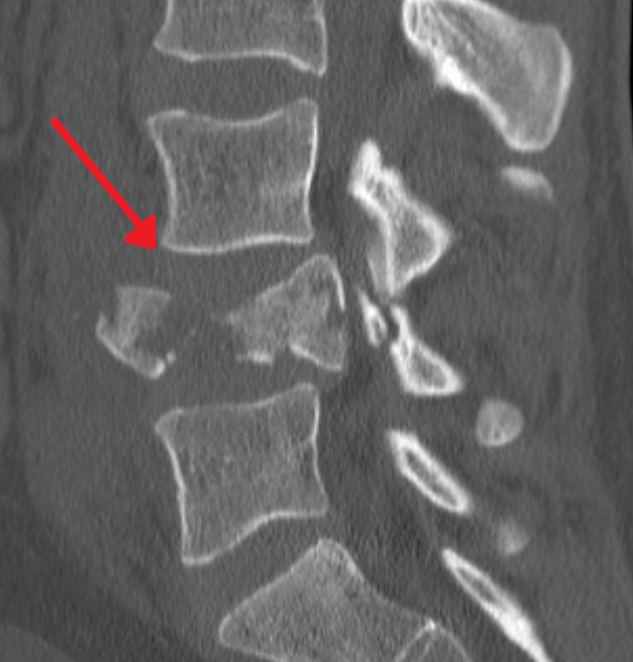

Ficha del catálogo
Fractura vertebral por estallido
- Sistema
- Óseo
- Modalidad
- TC
- Región
- Columna toracolumbar
- Dificultad
- Avanzado
La fractura por estallido resulta de una carga axial que fragmenta el cuerpo vertebral en varias direcciones y afecta tanto al muro anterior como al posterior. Se concentra en la unión toracolumbar, donde cambia la rigidez de la columna. Su rasgo definitorio es la retropulsión de un fragmento del muro posterior hacia el conducto raquídeo, con riesgo neurológico. La distinción respecto al aplastamiento simple por compresión es la clave del informe porque cambia por completo el manejo.
Técnica
Tomografía con cortes finos y reconstrucciones sagital y coronal de todo el segmento traumatizado. Las radiografías simples sirven de cribado pero infravaloran la afectación del muro posterior.
Qué observar
- Pérdida de altura del cuerpo vertebral con fragmentación de la esponjosa
- Interrupción del muro posterior con fragmento retropulsado al conducto
- Aumento de la distancia interpedicular en la reconstrucción coronal
- Trazos verticales en la lámina, frecuentes y a menudo desapercibidos
- Separación de las apófisis espinosas, indicador de lesión del complejo posterior
- Alineación global del segmento y grado de cifosis regional
Hallazgos
Fractura conminuta del cuerpo vertebral con afectación del muro posterior, fragmento retropulsado hacia el conducto y aumento de la distancia interpedicular.
Perlas
El aumento de la distancia entre pedículos en la imagen frontal es un signo sencillo y muy útil para diferenciar el estallido del aplastamiento por compresión. Cuando existe, el muro posterior está roto aunque el corte axial parezca poco llamativo.
Diagnóstico diferencial
- Aplastamiento osteoporótico por compresión
- El muro posterior está íntegro y no hay retropulsión ni ensanchamiento interpedicular.
- Fractura patológica tumoral
- Destrucción lítica del pedículo y masa de partes blandas asociada.
- Lesión por flexión y distracción
- Predomina la separación de los elementos posteriores con trazo horizontal.
Simuladores
- Vértebra con muescas vasculares centrales prominentes
- Deformidad en cuña congénita
- Artefacto de movimiento en pacientes politraumatizados
Por modalidad
- RX
- Cribado inicial y valoración de la alineación global
- TC
- Método de elección para el patrón óseo y la ocupación del conducto
- RM
- Valora la médula, el ligamento posterior y la antigüedad del aplastamiento
Protocolo
Tomografía de columna con reconstrucciones multiplanares. Resonancia urgente ante déficit neurológico o sospecha de lesión del complejo ligamentario posterior.
Clasificación
Los sistemas actuales valoran la morfología de la fractura, la integridad del complejo ligamentario posterior y el estado neurológico para decidir el tratamiento.
Errores frecuentes
- Informar como aplastamiento simple una fractura con muro posterior roto
- No revisar los elementos posteriores ni las láminas
- Limitar el estudio a la vértebra dolorosa y omitir fracturas en otros niveles

columna toracolumbar estallido muro posterior retropulsion interpedicular trauma